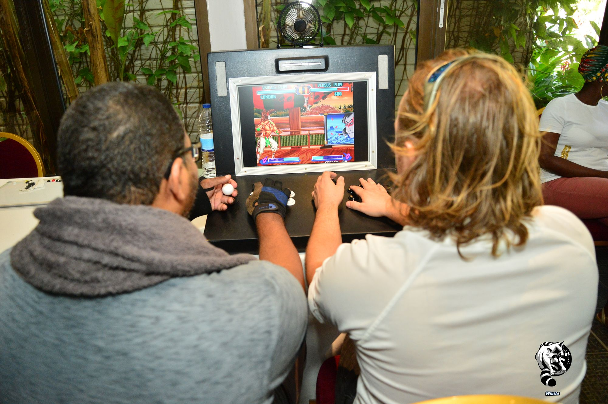
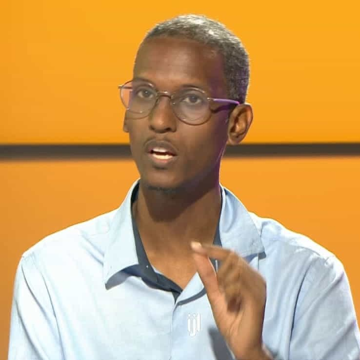

Un dispositif fondé sur les repères HAS, pour SESSAD, IME, associations et collectivités. Cadre théorique, indicateurs d'évaluation, médiateur formé, restitution écrite à chaque séance.
PXLC accompagne les enfants neurodivergents (TSA, TDAH, TCND, Dys-) accueillis en SESSAD, IME ou structure sociale, en partant de leurs jeux vidéo pour reconstruire le dialogue avec leurs parents.
Les recommandations HAS 2020 invitent à soutenir la fonction parentale dans la médiation des écrans, plutôt qu'à les bannir. Sur le terrain, les équipes pluridisciplinaires manquent de ressources spécifiques sur le numérique.
Un dispositif clé en main : 6 à 12 ateliers individuels, médiateur formé, restitution écrite à chaque séance, indicateurs calibrés pour s'intégrer aux bilans ARS / DRJSCS.
Pas un avis personnel sur les écrans : un cadre construit à partir des recommandations institutionnelles françaises. Chaque référence est citée explicitement dans les comptes-rendus transmis aux équipes.
« Soutenir la fonction parentale dans la médiation des écrans plutôt que prescrire des interdits. » C'est l'axe central du protocole PXLC.
Rappel des risques et des leviers — le cadre familial, les pratiques partagées, la qualité du contenu. Pas de panique morale, une lecture posée.
Référentiel des actions de soutien à la parentalité — la médiation numérique s'inscrit dans cette catégorie reconnue et finançable par les CAF et les départements.
Un protocole simple, qui transpose les repères du rapport HAS dans le quotidien d'une famille. Pas de discours moral, pas d'écrans diabolisés — un cadre.
Andy joue avec l'enfant à son jeu favori et identifie ce qu'il y investit émotionnellement — compétence, lien social, refuge, structuration. Temps d'observation actif, pas un entretien clinique.
↳ livrable · ce que l'enfant met dans son écran, sans projection adulteLe jeu devient un langage commun : Andy restitue ce que l'enfant met dans son écran, sans jugement, sans jargon technique. Les parents ne reçoivent pas un diagnostic — ils reçoivent une grille de lecture.
↳ livrable · une nouvelle façon d'écouter ce que dit l'enfant en jouantParents et enfant repartent avec un cadre et des rituels concrets — pas une liste d'interdictions, une nouvelle façon de partager. Le suivi se fait en lien avec l'équipe pluridisciplinaire.
↳ livrable · des rituels durables, un dialogue restauré
Cas pratiqueChaque structure adapte les volumes et les rythmes — la séquence reste la même. Tous les livrables sont rédigés sous format restitution équipe, intégrables aux dossiers patients et aux bilans d'activité.
Cadrage avec l'équipe (chef de service, éducateurs référents, psychologue). Lecture des dossiers selon les règles RGPD de la structure. Recueil du consentement parental signé. Définition des objectifs individuels par enfant.
↳ livrable · note de cadrage (2 pages)Sessions hebdomadaires d'1 h par enfant, sur le lieu de la structure ou au domicile selon le projet. Chaque atelier articule un temps de jeu (30 min) et un temps de médiation (30 min). Compte-rendu écrit transmis à l'équipe à chaque séance.
↳ livrable · comptes-rendus séance (1 par séance)Restitution collective aux parents (2 sessions de 1 h 30). Échanges entre familles, repères communs, questions partagées sur les écrans, le contrôle parental, les jeux compétitifs et les dynamiques de fratrie. Animation par Andy, présence d'un membre de l'équipe.
↳ livrable · synthèse parents (3 pages, repères pratiques)Bilan écrit transmis à l'équipe pluridisciplinaire. KPIs renseignés sur la grille d'indicateurs (cf. p. 07). Recommandations individualisées pour la suite du parcours en SESSAD / IME. Réunion de clôture avec le chef de service.
↳ livrable · rapport final (8 à 12 pages)Tous les livrables respectent le secret partagé entre professionnels du soin, le RGPD, et les règles internes de la structure. Aucune donnée n'est conservée par PXLC au-delà de la mission, sauf demande explicite.
Une grille concise, transmise à votre équipe, calibrée pour s'intégrer aux bilans ARS / DRJSCS. Les seuils sont des cibles méthodologiques (objectifs de mission), pas des résultats garantis.
Les valeurs ci-dessus sont les cibles de mission, calibrées sur la première campagne SESSAD Lékoklaya (2024). Les résultats observés varient selon le profil des enfants accueillis et les conditions d'engagement de la famille.
Pas une méthode unique — des entrées spécifiques selon les besoins du public accueilli. La grille ci-dessous est indicative : l'approche concrète est calibrée enfant par enfant en lien avec l'équipe pluridisciplinaire.
Approche structurée, repères visuels, intérêts spécifiques pris au sérieux comme leviers de médiation. Les jeux à monde ouvert (Minecraft, Animal Crossing) sont souvent des espaces structurants.
Médiation courte, jeux à boucles rapides, valorisation de l'hyperfocus comme compétence. Les jeux compétitifs (Fortnite, FIFA) deviennent des terrains de discussion sur la gestion de la frustration.
Cadre adapté au profil singulier de l'enfant, lien renforcé entre la famille et l'équipe pluridisciplinaire. Le médiateur sert d'interface entre le vécu numérique et le projet de soin.
Le jeu comme support de remédiation, valorisation des forces visuelles et de la mémoire spatiale. Le numérique offre des modalités d'expression alternatives à l'écrit.
8 à 17 ans. Au-delà, des ateliers spécifiques peuvent être conçus avec la structure (jeunes adultes, transition vers l'autonomie). En-deçà, l'accompagnement passe principalement par les parents.
Une mission pensée avec l'équipe pluridisciplinaire, sur trois mois, auprès de neuf enfants TSA et TDAH.
CadrageLe SESSAD Lékoklaya accueille des enfants TSA et TDAH âgés de 8 à 14 ans. L'équipe avait identifié, lors de plusieurs synthèses, que les écrans étaient un point de friction récurrent dans les familles, sans qu'aucun professionnel ne se sente légitime pour aborder le sujet en profondeur. Le dispositif PXLC a été cadré pour combler ce manque, sans empiéter sur les missions des éducateurs.
Déroulé9 enfants ont participé à 12 ateliers individuels d'1 h chacun, suivis de 2 groupes de parole avec les parents. Restitution écrite à chaque séance, partagée avec l'éducateur référent et la psychologue. Bilan final présenté au chef de service.
Retours observésAdhésion forte des enfants sur la durée (présence et engagement actif). Retours positifs des parents sur la qualité du dialogue retrouvé autour des écrans, et apaisement rapporté des routines du soir. Le dispositif est aujourd'hui intégré au projet de service du SESSAD.
Note · les chiffres détaillés (mesures avant / après dialogue, sommeil, co-régulation) sont disponibles dans le rapport final, transmissible sur demande après validation par l'équipe Lékoklaya.
Né en Guadeloupe, formé à la médiation interculturelle et au numérique, Andy Zébus a passé six ans à structurer la scène esport guadeloupéenne avant de faire de la rencontre entre les écrans et la relation parent-enfant son métier.
Six ans à monter la scène esport guadeloupéenne avec Esports Guadeloupe — tournois, communauté, partenariats grands comptes. Connaît de l'intérieur la communauté joueurs, l'économie d'un tournoi et le langage Discord d'équipe.
Formateur principal en médiation numérique chez Simplon Outre-Mer (2021–2022). Lecture rigoureuse des recommandations HAS et HCSP. Pratique en cohérence avec les standards du soutien à la parentalité.
Affaires européennes et numérique THD à la Région Guadeloupe, formation aux élus et accompagnement des collectivités. Connaît le langage des projets de service et des bilans d'activité.

100 € / heure
Tarif appliqué à toutes les heures facturées (atelier, cadrage, rédaction, restitution, déplacement). Devis détaillé après cadrage initial.
Guadeloupe — Grande-Terre, Basse-Terre, Marie-Galante. Pour les structures hors archipel, le cadrage initial peut se faire en visio. Le présentiel reste la modalité par défaut, la médiation se faisant mieux en présence.
Délai habituel entre première prise de contact et premier atelier : 4 à 6 semaines (cadrage, recueil des consentements, planning équipe).